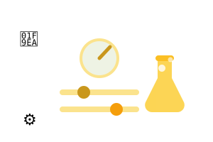

Ferramentas prontas para usar em sala — sem cadastro, sem internet e sem depender de IA externa. Monte, gere e projete. Você encontra o semáforo da sala, o gerador de plano de aula, o quiz em sala, o cronômetro, o sorteador de grupos, a rubrica, o checklist de acessibilidade — e as novidades: cartaz de Combinados da Turma, Simplificador de Texto em lÃngua fácil e o gerador de Atividade Rápida. Cada ferramenta nasce de uma técnica ensinada nos módulos do curso.

Controle visual do tom da turma: verde = todos falam, amarelo = um por vez, vermelho = silêncio. Tela cheia para projetar.
Usar agora →Roteiro, slides, 3 nÃveis, dinâmica, quiz e inclusão — gerados na hora a partir do tema. Copie, imprima ou use como prompt.
Usar agora →Monte um quiz de múltipla escolha, projete em tela cheia e acompanhe a pontuação ao vivo. Inclui pergunta-bônus.
Usar agora →Gerencie o tempo das etapas da aula com contagem regressiva, presets e barra de progresso — projete e não perca o ritmo.
Usar agora →Embaralhe a ordem de chamada ou monte grupos aleatórios a partir de uma lista de nomes, na hora, sem sorteio na mão.
Usar agora →Gere rubricas de avaliação com critérios e nÃveis para validar o aprendizado real — difÃcil de colar com IA.
Usar agora →Confira se seus materiais atendem a inclusão (CAA, TEA, TDAH, leitura fácil) com uma lista interativa e com pontuação.
Usar agora →Monte o cartaz de combinados da turma em minutos: escolha as regras, gere o cartaz bonito e projete ou imprima.
Usar agora →Cole um texto difÃcil e receba uma versão em lÃngua fácil: frases curtas, palavras simples — pronto para leitura inclusiva.
Usar agora →Escolha o tema e o segmento e receba uma atividade pronta com instruções, desafio extra e gabarito — para usar amanhã.
Usar agora →Do Módulo 4 do curso: um recurso visual para pactuar o tom da aula sem gritar. Clique no cÃrculo para alternar ou use os botões.
Como usar em sala: combine com a turma o significado de cada cor antes de começar — verde é o momento de conversar e debater, amarelo é o momento de um falar de cada vez, vermelho é o momento de silêncio e atenção. Projete em tela cheia, deixe o semáforo sempre visÃvel e use as teclas 1, 2 e 3 para alternar sem interromper a aula. Com o tempo, um simples olhar para a tela é suficiente para a turma se organizar.
Preencha o tema e receba um plano completo — inspirado no "prompt-mestre" do curso. Funciona offline: use o resultado como está ou cole o texto gerado em qualquer IA para aprofundar.
O que ele entrega: roteiro com tempos de aula (de 50 minutos a uma oficina de 4h), roteiro de slides pronto para colar no Gamma/Canva/PowerPoint, o mesmo conteúdo em 3 nÃveis de dificuldade para a mesma turma, dinâmicas de engajamento, quiz com gabarito e uma sugestão de inclusão ajustada ao segmento escolhido. Marque um foco extra (inclusão, gestão de comportamento ou avaliação à prova de IA) e o plano ganha uma seção dedicada a esse tema.
Dica: depois de gerar, clique em Copiar texto e cole o resultado no ChatGPT ou no Claude pedindo os slides prontos — você terá o plano e o material em poucos minutos.
Adicione perguntas de múltipla escolha e projete o quiz em tela cheia. A turma responde em voz alta, você clica — o placar conta os acertos. Pergunta marcada como bônus vale +2 pontos.
Como jogar: monte de 5 a 10 perguntas do conteúdo da aula (aproveite as do gerador de plano), marque a alternativa correta de cada uma e inicie o quiz. Divida a turma em times, projete a pergunta, dê 30 segundos para discutirem e clique na resposta escolhida pelo time. O placar fica visÃvel o tempo todo, e a pergunta-bônus vira o momento mais disputado da aula. A barra de progresso mostra quantas perguntas faltam — ótimo para manter o ritmo.
Dica pedagógica: não individualize quem erra. O quiz é um jogo coletivo: o objetivo é discutir a resposta certa e aprender com o erro, não constranger ninguém.
Organize a aula em blocos de tempo e acompanhe o relógio sem pensar nele. Escolha a duração total e veja a barra de progresso — perfeito para fechar cada etapa no tempo certo e não estourar a carga horária.
Como usar: escolha um tempo rápido (50 min, 1h30, 2h ou o encontro de 4h) ou use o seu, inicie e projete. Avise a turma do recado no fim: quando a barra acabar, a atividade fecha. As teclas espaço pausam/retomam e R reseta.
Cole os nomes da turma (um por linha) e escolha: embaralhar a ordem de chamada ou montar grupos aleatórios na hora. Ótimo para dinâmicas, apresentações e para formar equipes sem deixar ninguém de fora.
Percorra esta lista conferindo cada item do seu slide, texto ou atividade. Quanto mais itens marcados, mais acessÃvel fica o material — para todos os alunos, incluindo TEA, TDAH e deficiência intelectual.
Você marcou 0 de 0 itens.
Marque os combinados que fazem sentido para a sua turma (ou escreva os seus) e gere um cartaz pronto para projetar e combinar com os alunos no primeiro dia — técnica ensinada no Módulo 4.
Cole um texto difÃcil (do livro, de um artigo, de um edital). A ferramenta aplica regras de lÃngua fácil (Easy Read) localmente: quebra em frases curtas, troca palavras difÃceis por simples e numera as ideias.
Digite o tema, escolha o segmento e o tipo de atividade. A ferramenta monta uma atividade pronta com instruções passo a passo, desafio extra e critérios de correção — tudo offline, na hora.
As principais ferramentas foram pensadas para funcionarem juntas. Um exemplo de roteiro semanal usando 4 delas:
💡 Todas as ferramentas funcionam offline e salvam nada em servidor: seus dados ficam só no seu navegador. Pode projetar sem medo.